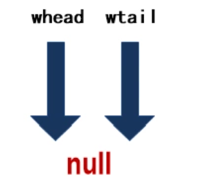

StampedLock类，在JDK1.8时引入，是对读写锁ReentrantReadWriteLock的增强，该类提供了一些功能，优化了读锁、写锁的访问，同时使读写锁之间可以互相转换，更细粒度控制并发。
首先明确下，该类的设计初衷是作为一个内部工具类，用于辅助开发其它线程安全组件，用得好，该类可以提升系统性能，用不好，容易产生死锁和其它莫名其妙的问题。
一、StampedLock类简介
1.1 StampedLock的引入
先来看下，为什么有了ReentrantReadWriteLock，还要引入StampedLock？
ReentrantReadWriteLock使得多个读线程同时持有读锁（只要写锁未被占用），而写锁是独占的。
但是，读写锁如果使用不当，很容易产生“饥饿”问题：
比如在读线程非常多，写线程很少的情况下，很容易导致写线程“饥饿”，虽然使用“公平”策略可以一定程度上缓解这个问题，但是“公平”策略是以牺牲系统吞吐量为代价的。
1.2 StampedLock的特点
StampedLock的主要特点概括一下，有以下几点：
- 所有获取锁的方法，都返回一个邮戳（Stamp），Stamp为0表示获取失败，其余都表示成功；
- 所有释放锁的方法，都需要一个邮戳（Stamp），这个Stamp必须是和成功获取锁时得到的Stamp一致；
- StampedLock是不可重入的；（如果一个线程已经持有了写锁，再去获取写锁的话就会造成死锁）
- StampedLock有三种访问模式：
①Reading（读模式）：功能和ReentrantReadWriteLock的读锁类似
②Writing（写模式）：功能和ReentrantReadWriteLock的写锁类似
③Optimistic reading（乐观读模式）：这是一种优化的读模式。 - StampedLock支持读锁和写锁的相互转换
我们知道RRW中，当线程获取到写锁后，可以降级为读锁，但是读锁是不能直接升级为写锁的。
StampedLock提供了读锁和写锁相互转换的功能，使得该类支持更多的应用场景。 - 无论写锁还是读锁，都不支持Conditon等待
我们知道，在ReentrantReadWriteLock中，当读锁被使用时，如果有线程尝试获取写锁，该写线程会阻塞。
但是，在Optimistic reading中，即使读线程获取到了读锁，写线程尝试获取写锁也不会阻塞，这相当于对读模式的优化，但是可能会导致数据不一致的问题。所以，当使用Optimistic reading获取到读锁时，必须对获取结果进行校验。
二、StampedLock使用示例
先来看一个Oracle官方的例子：
class Point {
private double x, y;
private final StampedLock sl = new StampedLock();
void move(double deltaX, double deltaY) {
long stamp = sl.writeLock(); //涉及对共享资源的修改，使用写锁-独占操作
try {
x += deltaX;
y += deltaY;
} finally {
sl.unlockWrite(stamp);
}
}
/**
* 使用乐观读锁访问共享资源
* 注意：乐观读锁在保证数据一致性上需要拷贝一份要操作的变量到方法栈，并且在操作数据时候可能其他写线程已经修改了数据，
* 而我们操作的是方法栈里面的数据，也就是一个快照，所以最多返回的不是最新的数据，但是一致性还是得到保障的。
*
* @return
*/
double distanceFromOrigin() {
long stamp = sl.tryOptimisticRead(); // 使用乐观读锁
double currentX = x, currentY = y; // 拷贝共享资源到本地方法栈中
if (!sl.validate(stamp)) { // 如果有写锁被占用，可能造成数据不一致，所以要切换到普通读锁模式
stamp = sl.readLock();
try {
currentX = x;
currentY = y;
} finally {
sl.unlockRead(stamp);
}
}
return Math.sqrt(currentX * currentX + currentY * currentY);
}
void moveIfAtOrigin(double newX, double newY) { // upgrade
// Could instead start with optimistic, not read mode
long stamp = sl.readLock();
try {
while (x == 0.0 && y == 0.0) {
long ws = sl.tryConvertToWriteLock(stamp); //读锁转换为写锁
if (ws != 0L) {
stamp = ws;
x = newX;
y = newY;
break;
} else {
sl.unlockRead(stamp);
stamp = sl.writeLock();
}
}
} finally {
sl.unlock(stamp);
}
}
}可以看到，上述示例最特殊的其实是distanceFromOrigin方法，这个方法中使用了“Optimistic reading”乐观读锁，使得读写可以并发执行，但是“Optimistic reading”的使用必须遵循以下模式：
long stamp = lock.tryOptimisticRead(); // 非阻塞获取版本信息
copyVaraibale to ThreadMemory(); // 拷贝变量到线程本地堆栈
if(!lock.validate(stamp)){ // 校验
long stamp = lock.readLock(); // 获取读锁
try {
copyVaraibale2ThreadMemory(); // 拷贝变量到线程本地堆栈
} finally {
lock.unlock(stamp); // 释放悲观锁
}
}
useThreadMemoryVarables(); // 使用线程本地堆栈里面的数据进行操作三、StampedLock原理
3.1 StampedLock的内部常量
StampedLock虽然不像其它锁一样定义了内部类来实现AQS框架，但是StampedLock的基本实现思路还是利用CLH队列进行线程的管理，通过同步状态值来表示锁的状态和类型。
StampedLock内部定义了很多常量，定义这些常量的根本目的还是和ReentrantReadWriteLock一样，对同步状态值按位切分，以通过位运算对State进行操作：
对于StampedLock来说，写锁被占用的标志是第8位为1，读锁使用0-7位，正常情况下读锁数目为1-126，超过126时，使用一个名为
readerOverflow的int整型保存超出数。

部分常量的比特位表示如下：
另外，StampedLock相比ReentrantReadWriteLock，对多核CPU进行了优化，可以看到，当CPU核数超过1时，会有一些自旋操作:
3.2 示例分析
假设现在有三个线程：ThreadA、ThreadB、ThreadC、ThreadD。操作如下：
//ThreadA调用writeLock, 获取写锁//ThreadB调用readLock, 获取读锁//ThreadC调用readLock, 获取读锁//ThreadD调用writeLock, 获取写锁//ThreadE调用readLock, 获取读锁
1. StampedLock对象的创建
StampedLock的构造器很简单，构造时设置下同步状态值：
另外，StamedLock提供了三类视图：
这些视图其实是对StamedLock方法的封装，便于习惯了ReentrantReadWriteLock的用户使用：例如，ReadLockView其实相当于ReentrantReadWriteLock.readLock()返回的读锁;
2. ThreadA调用writeLock获取写锁
来看下writeLock方法：
StampedLock中大量运用了位运算，这里(s = state) & ABITS == 0L 表示读锁和写锁都未被使用，这里写锁可以立即获取成功，然后CAS操作更新同步状态值State。
操作完成后，等待队列的结构如下：

注意：StampedLock中，等待队列的结点要比AQS中简单些，仅仅三种状态。
0：初始状态
-1：等待中
1：取消
另外，结点的定义中有个cowait字段，该字段指向一个栈，用于保存读线程，这个后续会讲到。
3. ThreadB调用readLock获取读锁
来看下readLock方法：
由于ThreadA此时持有写锁，所以ThreadB获取读锁失败，将调用acquireRead方法，加入等待队列：
acquireRead方法非常复杂，用到了大量自旋操作：
/**
* 尝试自旋的获取读锁, 获取不到则加入等待队列, 并阻塞线程
*
* @param interruptible true 表示检测中断, 如果线程被中断过, 则最终返回INTERRUPTED
* @param deadline 如果非0, 则表示限时获取
* @return 非0表示获取成功, INTERRUPTED表示中途被中断过
*/
private long acquireRead(boolean interruptible, long deadline) {
WNode node = null, p; // node指向入队结点, p指向入队前的队尾结点
/**
* 自旋入队操作
* 如果写锁未被占用, 则立即尝试获取读锁, 获取成功则返回.
* 如果写锁被占用, 则将当前读线程包装成结点, 并插入等待队列（如果队尾是写结点,直接链接到队尾;否则,链接到队尾读结点的栈中）
*/
for (int spins = -1; ; ) {
WNode h;
if ((h = whead) == (p = wtail)) { // 如果队列为空或只有头结点, 则会立即尝试获取读锁
for (long m, s, ns; ; ) {
if ((m = (s = state) & ABITS) < RFULL ? // 判断写锁是否被占用
U.compareAndSwapLong(this, STATE, s, ns = s + RUNIT) : //写锁未占用,且读锁数量未超限, 则更新同步状态
(m < WBIT && (ns = tryIncReaderOverflow(s)) != 0L)) //写锁未占用,但读锁数量超限, 超出部分放到readerOverflow字段中
return ns; // 获取成功后, 直接返回
else if (m >= WBIT) { // 写锁被占用,以随机方式探测是否要退出自旋
if (spins > 0) {
if (LockSupport.nextSecondarySeed() >= 0)
--spins;
} else {
if (spins == 0) {
WNode nh = whead, np = wtail;
if ((nh == h && np == p) || (h = nh) != (p = np))
break;
}
spins = SPINS;
}
}
}
}
if (p == null) { // p == null表示队列为空, 则初始化队列(构造头结点)
WNode hd = new WNode(WMODE, null);
if (U.compareAndSwapObject(this, WHEAD, null, hd))
wtail = hd;
} else if (node == null) { // 将当前线程包装成读结点
node = new WNode(RMODE, p);
} else if (h == p || p.mode != RMODE) { // 如果队列只有一个头结点, 或队尾结点不是读结点, 则直接将结点链接到队尾, 链接完成后退出自旋
if (node.prev != p)
node.prev = p;
else if (U.compareAndSwapObject(this, WTAIL, p, node)) {
p.next = node;
break;
}
}
// 队列不为空, 且队尾是读结点, 则将添加当前结点链接到队尾结点的cowait链中（实际上构成一个栈, p是栈顶指针 ）
else if (!U.compareAndSwapObject(p, WCOWAIT, node.cowait = p.cowait, node)) { // CAS操作队尾结点p的cowait字段,实际上就是头插法插入结点
node.cowait = null;
} else {
for (; ; ) {
WNode pp, c;
Thread w;
// 尝试唤醒头结点的cowait中的第一个元素, 假如是读锁会通过循环释放cowait链
if ((h = whead) != null && (c = h.cowait) != null &&
U.compareAndSwapObject(h, WCOWAIT, c, c.cowait) &&
(w = c.thread) != null) // help release
U.unpark(w);
if (h == (pp = p.prev) || h == p || pp == null) {
long m, s, ns;
do {
if ((m = (s = state) & ABITS) < RFULL ?
U.compareAndSwapLong(this, STATE, s,
ns = s + RUNIT) :
(m < WBIT &&
(ns = tryIncReaderOverflow(s)) != 0L))
return ns;
} while (m < WBIT);
}
if (whead == h && p.prev == pp) {
long time;
if (pp == null || h == p || p.status > 0) {
node = null; // throw away
break;
}
if (deadline == 0L)
time = 0L;
else if ((time = deadline - System.nanoTime()) <= 0L)
return cancelWaiter(node, p, false);
Thread wt = Thread.currentThread();
U.putObject(wt, PARKBLOCKER, this);
node.thread = wt;
if ((h != pp || (state & ABITS) == WBIT) && whead == h && p.prev == pp) {
// 写锁被占用, 且当前结点不是队首结点, 则阻塞当前线程
U.park(false, time);
}
node.thread = null;
U.putObject(wt, PARKBLOCKER, null);
if (interruptible && Thread.interrupted())
return cancelWaiter(node, p, true);
}
}
}
}
for (int spins = -1; ; ) {
WNode h, np, pp;
int ps;
if ((h = whead) == p) { // 如果当前线程是队首结点, 则尝试获取读锁
if (spins < 0)
spins = HEAD_SPINS;
else if (spins < MAX_HEAD_SPINS)
spins <<= 1;
for (int k = spins; ; ) { // spin at head
long m, s, ns;
if ((m = (s = state) & ABITS) < RFULL ? // 判断写锁是否被占用
U.compareAndSwapLong(this, STATE, s, ns = s + RUNIT) : //写锁未占用,且读锁数量未超限, 则更新同步状态
(m < WBIT && (ns = tryIncReaderOverflow(s)) != 0L)) { //写锁未占用,但读锁数量超限, 超出部分放到readerOverflow字段中
// 获取读锁成功, 释放cowait链中的所有读结点
WNode c;
Thread w;
// 释放头结点, 当前队首结点成为新的头结点
whead = node;
node.prev = null;
// 从栈顶开始(node.cowait指向的结点), 依次唤醒所有读结点, 最终node.cowait==null, node成为新的头结点
while ((c = node.cowait) != null) {
if (U.compareAndSwapObject(node, WCOWAIT, c, c.cowait) && (w = c.thread) != null)
U.unpark(w);
}
return ns;
} else if (m >= WBIT &&
LockSupport.nextSecondarySeed() >= 0 && --k <= 0)
break;
}
} else if (h != null) { // 如果头结点存在cowait链, 则唤醒链中所有读线程
WNode c;
Thread w;
while ((c = h.cowait) != null) {
if (U.compareAndSwapObject(h, WCOWAIT, c, c.cowait) &&
(w = c.thread) != null)
U.unpark(w);
}
}
if (whead == h) {
if ((np = node.prev) != p) {
if (np != null)
(p = np).next = node; // stale
} else if ((ps = p.status) == 0) // 将前驱结点的等待状态置为WAITING, 表示之后将唤醒当前结点
U.compareAndSwapInt(p, WSTATUS, 0, WAITING);
else if (ps == CANCELLED) {
if ((pp = p.prev) != null) {
node.prev = pp;
pp.next = node;
}
} else { // 阻塞当前读线程
long time;
if (deadline == 0L)
time = 0L;
else if ((time = deadline - System.nanoTime()) <= 0L) //限时等待超时, 取消等待
return cancelWaiter(node, node, false);
Thread wt = Thread.currentThread();
U.putObject(wt, PARKBLOCKER, this);
node.thread = wt;
if (p.status < 0 && (p != h || (state & ABITS) == WBIT) && whead == h && node.prev == p) {
// 如果前驱的等待状态为WAITING, 且写锁被占用, 则阻塞当前调用线程
U.park(false, time);
}
node.thread = null;
U.putObject(wt, PARKBLOCKER, null);
if (interruptible && Thread.interrupted())
return cancelWaiter(node, node, true);
}
}
}
}我们来分析下这个方法。
该方法会首先自旋的尝试获取读锁，获取成功后，就直接返回；否则，会将当前线程包装成一个读结点，插入到等待队列。
由于，目前等待队列还是空，所以ThreadB会初始化队列，然后将自身包装成一个读结点，插入队尾，然后在下面这个地方跳出自旋：
此时，等待队列的结构如下：
跳出自旋后，ThreadB会继续向下执行，进入下一个自旋，在下一个自旋中，依然会再次尝试获取读锁，如果这次再获取不到，就会将前驱的等待状态置为WAITING, 表示我（当前线程）要去睡了（阻塞），到时记得叫醒我：
最终, ThreadB进入阻塞状态:
最终，等待队列的结构如下：
4. ThreadC调用readLock获取读锁
这个过程和ThreadB获取读锁一样，区别在于ThreadC被包装成结点加入等待队列后，是链接到ThreadB结点的栈指针中的。调用完下面这段代码后，ThreadC会链接到以Thread B为栈顶指针的栈中：

注意：读结点的cowait字段其实构成了一个栈，入栈的过程其实是个“头插法”插入单链表的过程。比如，再来个ThreadX读结点，则cowait链表结构为：
ThreadB - > ThreadX -> ThreadC。最终唤醒读结点时，将从栈顶开始。
然后会在下一次自旋中，阻塞当前读线程：
最终，等待队列的结构如下：
可以看到，此时ThreadC结点并没有把它的前驱的等待状态置为-1，因为ThreadC是链接到栈中的，当写锁释放的时候，会从栈底元素开始，唤醒栈中所有读结点。
5. ThreadD调用writeLock获取写锁
ThreadD调用writeLock方法获取写锁失败后（ThreadA依然占用着写锁），会调用acquireWrite方法，该方法整体逻辑和acquireRead差不多，首先自旋的尝试获取写锁，获取成功后，就直接返回；否则，会将当前线程包装成一个写结点，插入到等待队列。

acquireWrite源码：
/**
* 尝试自旋的获取写锁, 获取不到则阻塞线程
*
* @param interruptible true 表示检测中断, 如果线程被中断过, 则最终返回INTERRUPTED
* @param deadline 如果非0, 则表示限时获取
* @return 非0表示获取成功, INTERRUPTED表示中途被中断过
*/
private long acquireWrite(boolean interruptible, long deadline) {
WNode node = null, p;
/**
* 自旋入队操作
* 如果没有任何锁被占用, 则立即尝试获取写锁, 获取成功则返回.
* 如果存在锁被使用, 则将当前线程包装成独占结点, 并插入等待队列尾部
*/
for (int spins = -1; ; ) {
long m, s, ns;
if ((m = (s = state) & ABITS) == 0L) { // 没有任何锁被占用
if (U.compareAndSwapLong(this, STATE, s, ns = s + WBIT)) // 尝试立即获取写锁
return ns; // 获取成功直接返回
} else if (spins < 0)
spins = (m == WBIT && wtail == whead) ? SPINS : 0;
else if (spins > 0) {
if (LockSupport.nextSecondarySeed() >= 0)
--spins;
} else if ((p = wtail) == null) { // 队列为空, 则初始化队列, 构造队列的头结点
WNode hd = new WNode(WMODE, null);
if (U.compareAndSwapObject(this, WHEAD, null, hd))
wtail = hd;
} else if (node == null) // 将当前线程包装成写结点
node = new WNode(WMODE, p);
else if (node.prev != p)
node.prev = p;
else if (U.compareAndSwapObject(this, WTAIL, p, node)) { // 链接结点至队尾
p.next = node;
break;
}
}
for (int spins = -1; ; ) {
WNode h, np, pp;
int ps;
if ((h = whead) == p) { // 如果当前结点是队首结点, 则立即尝试获取写锁
if (spins < 0)
spins = HEAD_SPINS;
else if (spins < MAX_HEAD_SPINS)
spins <<= 1;
for (int k = spins; ; ) { // spin at head
long s, ns;
if (((s = state) & ABITS) == 0L) { // 写锁未被占用
if (U.compareAndSwapLong(this, STATE, s,
ns = s + WBIT)) { // CAS修改State: 占用写锁
// 将队首结点从队列移除
whead = node;
node.prev = null;
return ns;
}
} else if (LockSupport.nextSecondarySeed() >= 0 &&
--k <= 0)
break;
}
} else if (h != null) { // 唤醒头结点的栈中的所有读线程
WNode c;
Thread w;
while ((c = h.cowait) != null) {
if (U.compareAndSwapObject(h, WCOWAIT, c, c.cowait) && (w = c.thread) != null)
U.unpark(w);
}
}
if (whead == h) {
if ((np = node.prev) != p) {
if (np != null)
(p = np).next = node; // stale
} else if ((ps = p.status) == 0) // 将当前结点的前驱置为WAITING, 表示当前结点会进入阻塞, 前驱将来需要唤醒我
U.compareAndSwapInt(p, WSTATUS, 0, WAITING);
else if (ps == CANCELLED) {
if ((pp = p.prev) != null) {
node.prev = pp;
pp.next = node;
}
} else { // 阻塞当前调用线程
long time; // 0 argument to park means no timeout
if (deadline == 0L)
time = 0L;
else if ((time = deadline - System.nanoTime()) <= 0L)
return cancelWaiter(node, node, false);
Thread wt = Thread.currentThread();
U.putObject(wt, PARKBLOCKER, this);
node.thread = wt;
if (p.status < 0 && (p != h || (state & ABITS) != 0L) && whead == h && node.prev == p)
U.park(false, time); // emulate LockSupport.park
node.thread = null;
U.putObject(wt, PARKBLOCKER, null);
if (interruptible && Thread.interrupted())
return cancelWaiter(node, node, true);
}
}
}
}acquireWrite中的下面这个自旋操作，用于将线程包装成写结点，插入队尾：
插入完成后，队列结构如下：
然后，进入下一个自旋，并在下一个自旋中阻塞ThreadD，最终队列结构如下：
6. ThreadE调用readLock获取读锁
同样，由于写锁被ThreadA占用着，所以最终会调用acquireRead方法，在该方法的第一个自旋中，会将ThreadE加入等待队列：
注意，由于队尾结点是写结点，所以当前读结点会直接链接到队尾；如果队尾是读结点，则会链接到队尾读结点的cowait链中。
然后进入第二个自旋，阻塞ThreadE，最终队列结构如下：
7. ThreadA调用unlockWrite释放写锁
通过CAS操作，修改State成功后，会调用release方法唤醒等待队列的队首结点：
release方法非常简单，先将头结点的等待状态置为0，表示即将唤醒后继结点，然后立即唤醒队首结点：
此时，等待队列的结构如下：
8. ThreadB被唤醒后继续向下执行
ThreadB被唤醒后，会从原阻塞处继续向下执行，然后开始下一次自旋：
第二次自旋时，ThreadB发现写锁未被占用，则成功获取到读锁，然后从栈顶（ThreadB的cowait指针指向的结点）开始唤醒栈中所有线程，
最后返回：
最终，等待队列的结构如下：
9. ThreadC被唤醒后继续向下执行
ThreadC被唤醒后，继续执行，并进入下一次自旋，下一次自旋时，会成功获取到读锁。
注意，此时ThreadB和ThreadC已经拿到了读锁，ThreadD（写线程）和ThreadE（读线程）依然阻塞中，原来ThreadC对应的结点是个孤立结点，会被GC回收。
最终，等待队列的结构如下：
10. ThreadB和ThreadC释放读锁
ThreadB和ThreadC调用unlockRead方法释放读锁，CAS操作State将读锁数量减1：
注意，当读锁的数量变为0时才会调用release方法，唤醒队首结点：
队首结点（ThreadD写结点被唤醒），最终等待队列的结构如下：
11. ThreadD被唤醒后继续向下执行
ThreadD会从原阻塞处继续向下执行，并在下一次自旋中获取到写锁，然后返回:
最终，等待队列的结构如下：
12. ThreadD调用unlockWrite释放写锁
ThreadD释放写锁的过程和步骤7于ThreadE是个读结点，所以同时会唤醒cowait栈中的所有读结点，过程和步骤8完全一样。最终，等待队列的结构如下：

至此，全部执行完成。
四、StampedLock类/方法声明
参考Oracle官方文档：https://docs.oracle.com/javas…
类声明：\
方法声明：\
五、StampedLock总结
StampedLock的等待队列与RRW的CLH队列相比，有以下特点：
- 当入队一个线程时，如果队尾是读结点，不会直接链接到队尾，而是链接到该读结点的cowait链中，cowait链本质是一个栈；
- 当入队一个线程时，如果队尾是写结点，则直接链接到队尾；
- 唤醒线程的规则和AQS类似，都是首先唤醒队首结点。区别是StampedLock中，当唤醒的结点是读结点时，会唤醒该读结点的cowait链中的所有读结点（顺序和入栈顺序相反，也就是后进先出）。
另外，StampedLock使用时要特别小心，避免锁重入的操作，在使用乐观读锁时也需要遵循相应的调用模板，防止出现数据不一致的问题。